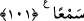

100. Ve kâfirleri o gün cehennemle yüz yüze getirmişizdir.
“Ve kâfirleri o gün” bütün mahlûkâtı topladığımız günde “cehennemle” mâhiyeti
bilinmeyen korkunç bir halde “yüz yüze getirmişizdir.” Cehennemi kâfirlere açıkça
göstermişizdir. Cehennemi öyle kıldık ki kâfirler onu görür, öfke ve homurtusunu
işitirler.
Bazı âlimlerin dediğine göre cehennem, Arapçalaştırılmış ve “çeh-nem (Dibi uzak
kuyu)” olan bir kelimedir.
Bir hadiste şöyle buyrulmuştur: “O gün cehennem getirilir. Onun yetmiş bin yuları
vardır. Kıyâmet gününde her yuların başında Allah’ın onu yarattığı yerden çeken
yetmiş bin melek vardır. Cehennem öyle bir yere konur ki, cennete geçebilmek için
sırat köprüsünden başka bir yol kalmaz.”[222] İşte bu yularlar, Allah’ın dilediği
kimselerin dışında cehennemin mahşer halkına saldırmasına mâni olur. İbn Melek’in
Şerhu’l-Meşârık adlı eserinde böyle geçmektedir.
Cehennemle yüz yüze getirme kâfirlere tahsis edilmiştir. Halbuki cehennem mahşerde
toplanan herkesin göreceği bir yerdedir. Bunun sebebi yüz yüze getirmenin, özel olarak
kâfirler için olmasıdır. Onları kaplayan büyük keder ve gam sebebiyle bu, daha işin
başından onlara ceza yerine geçer.
et-Te’vîlâtü’n-Necmiyye’de der ki: “Bu âyet işaret eder ki cehennem, kıyâmetten önce
mü’minlerin ruhlarına arzedildiği gibi kâfirlerin ruhlarına da arzedilseydi, mü’minlerin
îman ettikleri gibi onlar da îman ederlerdi. Çünkü bu durumda gözleri Allah’ın zikrine
karşı kapalı kalmayacak, kalblerinin kulakları da açık olduğu için Allah’ın kelâmını
dinleyebileceklerdi.”
101. Onlar gözleri beni anmaya kapalı bulunan, kulak vermeye de tahammül
edemez olanlardı.
“Onlar gözleri beni anmaya kapalı bulunan” dünyada iken gözleri, her taraftan
çepeçevre kalın bir perde ile perdelenen kimselerdi. Yâni, tedebbür sâhibi akıl ve
basîret ehlini, beni anmaya, tevhide ve beni yüceltmeye sevkeden âyetlerden gözleri
kapalıydı. Nitekim şâir şöyle demiştir:
Her şeyde O’na bir âyet/delil var.
Onun tek olduğuna delâlet eder.
---
Ağacın yeşil yaprağı akıllı/uyanık kimsenin nazarında
Her yaprak Hakk’ın vahdâniyetini bildiren bir defterdir